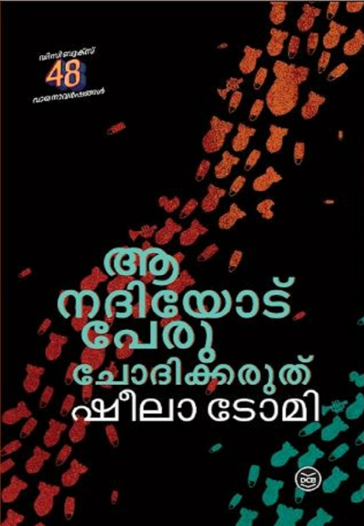

Author: ഷീലാ ടോമി
Review by: സരോജിനി
ഷീലാ ടോമിയുടെ 'ആ നദിയോട് പേരു ചോദിക്കരുത്' വായിച്ചു. ഇഷ്ടപ്പെട്ടു. 'റൂത്ത്' എന്ന മലയാളി നേഴ്സിൻ്റെ സഞ്ചാരവഴികളിലൂടെയാണ് നോവൽ മുന്നോട്ടു പോകുന്നത്. അഷേറും സഹലും സാറയും ആ ബായുമെല്ലാം കഥാപാത്രങ്ങൾക്കപ്പുറം നമുക്കൊപ്പം ജീവിക്കുന്നവരാണെന്ന് തോന്നിപ്പോകും. പലായനത്തിൻ്റെയും യുദ്ധത്തിൻ്റെയും തീരാനൊമ്പരങ്ങൾ വായനക്കാരുടെ ഉറക്കം കെടുത്തുന്നു. അപരിചിതമായ ഒരു ദേശവും സംസ്കാരവും നോവലിസ്റ്റ് നമ്മെ പരിചയപ്പെടുത്തുകയാണ്. 'വാളേറ്റ് മരിച്ചവർ വിശപ്പു കൊണ്ട് മരിക്കുന്നവരേക്കാൾ ഭാഗ്യവാന്മാരാണ് ' എന്ന ഒറ്റ വാക്യം മതി ഗാസയിലെ ജനങ്ങളുടെ സഹനം മനസ്സിലാക്കാൻ.